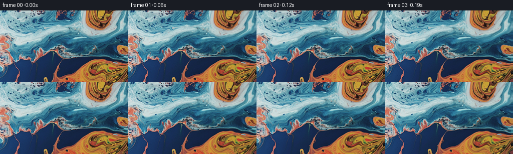

候选 01 · 2026-11-09T00:33:42.956204+00:00 · 点开播放与检查图
inspection.png

transition_check.png

代码变化
--- 上一保存版本
+++ 本次保存版本
@@ -0,0 +1,97 @@
+"""Animate the supplied macro photograph by camera translation and liquid advection.
+
+All visible detail is sampled from the supplied RGB image. A smoothly bent
+reflection extends the very small region uncovered at the right of the pan.
+"""
+from pathlib import Path
+import json
+import numpy as np
+import cv2
+from PIL import Image
+from artifact_io import save
+
+ROOT = Path(__file__).resolve().parent
+
+
+def velocity(x, y, time):
+ # Stream-function fields: incompressible local circulation preserves the
+ # delicate painted filaments, without introducing dissolves or new colors.
+ u = np.zeros_like(x)
+ v = np.zeros_like(y)
+ for cx, cy, radius, strength in (
+ (193.0, 8.0, 34.0, 3.5),
+ (229.0, 132.0, 55.0, -4.6),
+ (122.0, 64.0, 62.0, 2.7),
+ (24.0, 27.0, 29.0, -1.7),
+ (293.0, 76.0, 46.0, 2.0),
+ ):
+ dx, dy = (x-cx)/radius, (y-cy)/radius
+ q = strength * np.exp(-0.5*(dx*dx+dy*dy))
+ u -= dy*q
+ v += dx*q
+ # Low-amplitude, slow eddies superimposed on the principal swirls.
+ phase = 0.12 * time
+ a = x/45.0 + 0.4 + phase
+ b = y/32.0 - 0.3 - phase*0.7
+ u += 0.72*np.sin(a)*np.cos(b)
+ v -= 0.72*32.0/45.0*np.cos(a)*np.sin(b)
+ a = x/18.0 + y/75.0 + 1.7
+ b = y/23.0 - phase*0.5
+ u += 0.18*np.sin(a)*np.cos(b)
+ v -= 0.18*23.0/18.0*np.cos(a)*np.sin(b)
+ return u, v
+
+
+def extended_texture(image):
+ # Beyond the image boundary, bend reflected texture asymmetrically. The
+ # displacement and its first derivative vanish at the boundary, so the
+ # extension joins with no color seam. The pan exposes only 53 pixels here.
+ pad = 64
+ h, w = image.shape[:2]
+ xx, yy = np.meshgrid(np.arange(-pad, w+110, dtype=np.float32),
+ np.arange(-pad, h+pad, dtype=np.float32))
+ q = np.maximum(xx-(w-1), 0)
+ bend = q*q/(q+28.0)
+ sx = xx.copy()
+ sy = yy + bend * (0.43 + 0.27*np.sin(yy/40.0+0.8))
+ sx = np.where(q > 0, (w-1)-q*(0.88+0.12*np.cos(yy/54.0))
+ - 0.06*bend*np.sin(yy/17.0), sx)
+ texture = cv2.remap(image, sx, sy, cv2.INTER_CUBIC,
+ borderMode=cv2.BORDER_REFLECT_101)
+ return texture, pad
+
+
+def main():
+ spec = json.loads((ROOT/'task_spec.json').read_text())
+ source = np.array(Image.open(ROOT/'first_frame.png').convert('RGB'))
+ texture, pad = extended_texture(source)
+ h, w = source.shape[:2]
+ xx, yy = np.meshgrid(np.arange(w, dtype=np.float32),
+ np.arange(h, dtype=np.float32))
+ frames = np.empty((spec['frames'], h, w, 3), dtype=np.uint8)
+ frames[0] = source
+ for i in range(1, spec['frames']):
+ t = i/spec['fps']
+ # A consistent rightward tracking move, with a gentle start over 0.3s.
+ pan = 12.8*(t-0.16*(1-np.exp(-t/0.16)))
+ x = xx + pan
+ y = yy + 0.35*np.sin(t*0.65)
+ # Integrate the backward flow with midpoint steps rather than warping
+ # the preceding raster. This retains fine structure in every frame.
+ steps = max(4, int(np.ceil(t/0.18)))
+ dt = t/steps
+ for k in range(steps):
+ ti = t-k*dt
+ u, v = velocity(x, y, ti)
+ um, vm = velocity(x-0.5*dt*u, y-0.5*dt*v, ti-0.5*dt)
+ x -= dt*um
+ y -= dt*vm
+ frames[i] = cv2.remap(texture, (x+pad).astype(np.float32), (y+pad).astype(np.float32),
+ interpolation=cv2.INTER_CUBIC,
+ borderMode=cv2.BORDER_REFLECT_101)
+ assert np.array_equal(frames[0], source)
+ save(frames, ROOT)
+
+
+if __name__ == '__main__':
+ main()
命令 3 · 2026-11-09T00:33:17.580148+00:00/bin/bash -lc "cat > generate.py <<'PY'
\"\"\"Animate the supplied macro photograph by camera translation and liquid advection.
All visible detail is sampled from the supplied RGB image. A smoothly bent
reflection extends the very small region uncovered at the right of the pan.
\"\"\"
from pathlib import Path
import json
import numpy as np
import cv2
from PIL import Image
from artifact_io import save
ROOT = Path(__file__).resolve().parent
def velocity(x, y, time):
# Stream-function fields: incompressible local circulation preserves the
# delicate painted filaments, without introducing dissolves or new colors.
u = np.zeros_like(x)
v = np.zeros_like(y)
for cx, cy, radius, strength in (
(193.0, 8.0, 34.0, 3.5),
(229.0, 132.0, 55.0, -4.6),
(122.0, 64.0, 62.0, 2.7),
(24.0, 27.0, 29.0, -1.7),
(293.0, 76.0, 46.0, 2.0),
):
dx, dy = (x-cx)/radius, (y-cy)/radius
q = strength * np.exp(-0.5*(dx*dx+dy*dy))
u -= dy*q
v += dx*q
# Low-amplitude, slow eddies superimposed on the principal swirls.
phase = 0.12 * time
a = x/45.0 + 0.4 + phase
b = y/32.0 - 0.3 - phase*0.7
u += 0.72*np.sin(a)*np.cos(b)
v -= 0.72*32.0/45.0*np.cos(a)*np.sin(b)
a = x/18.0 + y/75.0 + 1.7
b = y/23.0 - phase*0.5
u += 0.18*np.sin(a)*np.cos(b)
v -= 0.18*23.0/18.0*np.cos(a)*np.sin(b)
return u, v
def extended_texture(image):
# Beyond the image boundary, bend reflected texture asymmetrically. The
# displacement and its first derivative vanish at the boundary, so the
# extension joins with no color seam. The pan exposes only 53 pixels here.
pad = 64
h, w = image.shape[:2]
xx, yy = np.meshgrid(np.arange(-pad, w+110, dtype=np.float32),
np.arange(-pad, h+pad, dtype=np.float32))
q = np.maximum(xx-(w-1), 0)
bend = q*q/(q+28.0)
sx = xx.copy()
sy = yy + bend * (0.43 + 0.27*np.sin(yy/40.0+0.8))
sx = np.where(q > 0, (w-1)-q*(0.88+0.12*np.cos(yy/54.0))
- 0.06*bend*np.sin(yy/17.0), sx)
texture = cv2.remap(image, sx, sy, cv2.INTER_CUBIC,
borderMode=cv2.BORDER_REFLECT_101)
return texture, pad
def main():
spec = json.loads((ROOT/'task_spec.json').read_text())
source = np.array(Image.open(ROOT/'first_frame.png').convert('RGB'))
texture, pad = extended_texture(source)
h, w = source.shape[:2]
xx, yy = np.meshgrid(np.arange(w, dtype=np.float32),
np.arange(h, dtype=np.float32))
frames = np.empty((spec['frames'], h, w, 3), dtype=np.uint8)
frames[0] = source
for i in range(1, spec['frames']):
t = i/spec['fps']
# A consistent rightward tracking move, with a gentle start over 0.3s.
pan = 12.8*(t-0.16*(1-np.exp(-t/0.16)))
x = xx + pan
y = yy + 0.35*np.sin(t*0.65)
# Integrate the backward flow with midpoint steps rather than warping
# the preceding raster. This retains fine structure in every frame.
steps = max(4, int(np.ceil(t/0.18)))
dt = t/steps
for k in range(steps):
ti = t-k*dt
u, v = velocity(x, y, ti)
um, vm = velocity(x-0.5*dt*u, y-0.5*dt*v, ti-0.5*dt)
x -= dt*um
y -= dt*vm
frames[i] = cv2.remap(texture, x+pad, y+pad,
interpolation=cv2.INTER_CUBIC,
borderMode=cv2.BORDER_REFLECT_101)
assert np.array_equal(frames[0], source)
save(frames, ROOT)
if __name__ == '__main__':
main()
PY
python generate.py"exit 1 命令 4 · 2026-11-09T00:33:38.682001+00:00/bin/bash -lc "python - <<'PY'
p='generate.py'
s=open(p).read().replace('cv2.remap(texture, x+pad, y+pad,','cv2.remap(texture, (x+pad).astype(np.float32), (y+pad).astype(np.float32),')
open(p,'w').write(s)
PY
python generate.py"exit 0 命令 5 · 2026-11-09T00:33:53.207165+00:00/bin/bash -lc "python - <<'PY'
import numpy as np
from PIL import Image
p=np.load('pixels.npz')['pixels']
a=np.array(Image.open('first_frame.png').convert('RGB'))
b=np.stack([(p[:,:,0]>>16)&255,(p[:,:,0]>>8)&255,p[:,:,0]&255],axis=-1).astype('uint8')
assert p.shape==(144,256,81)
assert np.array_equal(a,b)
print('Validated 81 frames at 256Ã144; first frame pixel-identical.')
PY
if command -v ffmpeg >/dev/null 2>&1; then ffmpeg -y -loglevel error -framerate 16 -i frames/%02d.png -frames:v 81 -c:v libx264 -crf 17 -pix_fmt yuv420p -movflags +faststart video.mp4; fi
ls -lh pixels.npz index.html video.mp4 2>/dev/null"exit 2